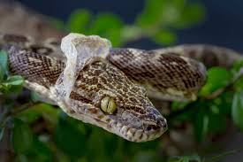
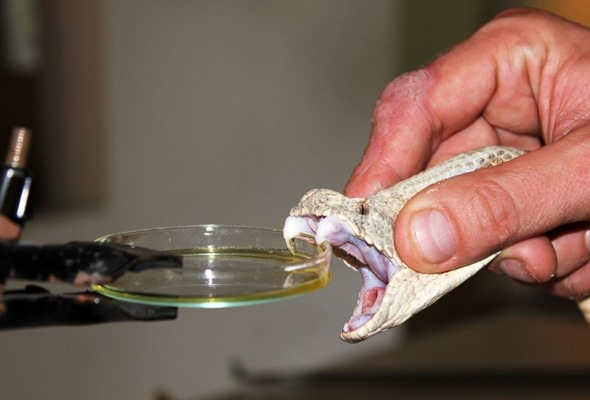

İlanlar elastik çənə quruluşuna sahibdir. Bununla da böyük canlıları uda bilirlər.İlanların çoxu
zəhərsizdir.Zəhərsiz ilan növləri ovlarına dolanaraq onları boğur. İlanların zəhərli növləri isə
zəhərdən ovlanmaq, yaxud özlərini qorumaq məqsədi ilə istifadə edirlər.İlanlar həşərat,
qurbağa, quş, balıq, kərtənkələ, siçan, yumurta və s. ilə qidalanır.
İlanları öyrənən elm serpantologiya adlanır.
İlan dərisi pulcuqlarla örtülüdür, hamar və quru quruluşa malikdir. İlanların qarın və bel pulcuqlarının quruluşu fərqlidir. Dəri rəngləri çox müxtəlidir. Bəziləri bir rəngə, bəziləri isə 3-4 rəngə sahibdir. Rəngli ilanlar, əsasən, zəhərlidir. Ancaq zəhərli olmayan rəngli ilanlar da var. Rəngli dəri təhlükəni bildirir və düşmənləri qorxutmaq üçün istifadə olunur, amma bu o demək deyil ki, birrəngli ilanların dəriləri qorunmaq üçün əlverişsizdir. Birrəngli ilanların rəngi daha çox bozumtul, qəhvəyi və qara rəngli olur ki, bu rənglər də torpaqda, qumda, daşda gizlənmək üçün (kamuflyaj) ideal rənglərdir.
Bir çox canlı kimi ilanlar da dəri dəyişdirir. Köhnə dəri ağız tərəfdən cırır, ilan daş, ağac kimi obyektlərə sürtünərək dərisini çıxardır. Bu prosesin bir neçə funksiyası var. İlk növbədə ilan köhnə dəridən azad olur, həm də parazitlərdən təmizlənir.
Zəhər başın arxasındakı zəhər vəzilərində toplanır və dişlər vasitəsilə ova, yaxud düşmənə yeridilir. Tüpürən kobra kimi bir neçə ilan təhlükə hiss etdikdə düşmənin gözünə zəhər tüpürür. Bəzi heyvanlarda ilan zəhərinə qarşı təbii peyvənd vardır və zəhər onlara təsir etmir.
